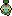

咬碎Crunch
- 屬性
- 惡
- 分類
- 特殊
- 威力
- 80
- 命中
- 100%
- SP
- 30
- 冷卻
- 1.8 秒（特殊組）
- 範圍
- 近戰
- 距離
- 1 格
- 段數
- 1
- 前搖
- 0.6 秒
- 接觸
- 是
招式分類跟隨招式的 屬性 （第三世代規則，與火紅／葉綠相同）：火、水、草、電、超能力、冰、龍、惡屬性招式一律是特殊招式；其他屬性是物理招式（例外：分擔痛楚）。因此暗影球是物理招式，攀瀑是特殊招式。這是刻意設計，不是錯誤。
即時戰鬥效果
有 20% 機率降低對手的特防（-1）。
命中使用者正前方的一個目標。
升級時學會
 尼多蘭 Lv 47
尼多蘭 Lv 47 尼多娜 Lv 53
尼多娜 Lv 53 麒麟奇 Lv 49
麒麟奇 Lv 49 大鋼蛇 Lv 52
大鋼蛇 Lv 52 布魯 Lv 53
布魯 Lv 53 布魯皇 Lv 61
布魯皇 Lv 61 戴魯比 Lv 49
戴魯比 Lv 49 黑魯加 Lv 59
黑魯加 Lv 59 雷公 Lv 61
雷公 Lv 61 幼基拉斯 Lv 43
幼基拉斯 Lv 43 沙基拉斯 Lv 47
沙基拉斯 Lv 47 班基拉斯 Lv 47
班基拉斯 Lv 47 土狼犬 Lv 41
土狼犬 Lv 41 大狼犬 Lv 47
大狼犬 Lv 47 大嘴娃 Lv 36
大嘴娃 Lv 36 利牙魚 Lv 22
利牙魚 Lv 22 巨牙鯊 Lv 22
巨牙鯊 Lv 22 大顎蟻 Lv 33
大顎蟻 Lv 33 超音波幼蟲 Lv 33
超音波幼蟲 Lv 33 沙漠蜻蜓 Lv 33
沙漠蜻蜓 Lv 33 飯匙蛇 Lv 28
飯匙蛇 Lv 28 龍蝦小兵 Lv 43
龍蝦小兵 Lv 43 鐵螯龍蝦 Lv 51
鐵螯龍蝦 Lv 51 雪童子 Lv 28
雪童子 Lv 28 冰鬼護 Lv 28
冰鬼護 Lv 28 獵斑魚 Lv 36
獵斑魚 Lv 36 寶貝龍 Lv 41
寶貝龍 Lv 41 甲殼龍 Lv 56
甲殼龍 Lv 56 暴飛龍 Lv 61
暴飛龍 Lv 61
草苗龜 Lv 37 樹林龜 Lv 42
樹林龜 Lv 42 土台龜 Lv 45
土台龜 Lv 45 小貓怪 Lv 33
小貓怪 Lv 33 勒克貓 Lv 38倫琴貓 Lv 42
勒克貓 Lv 38倫琴貓 Lv 42 浮潛鼬 Lv 26
浮潛鼬 Lv 26 烈咬陸鯊 Lv 48
烈咬陸鯊 Lv 48 沙河馬 Lv 31
沙河馬 Lv 31 河馬獸 Lv 31
河馬獸 Lv 31 鉗尾蠍 Lv 45
鉗尾蠍 Lv 45 龍王蠍 Lv 49
龍王蠍 Lv 49 尖牙籠 Lv 37
尖牙籠 Lv 37招式光碟
 惡屬性招式光碟 ・稀有（每打倒一隻該屬性寶可夢 0.3%，由 4 個招式分配）
惡屬性招式光碟 ・稀有（每打倒一隻該屬性寶可夢 0.3%，由 4 個招式分配）
可以教會 55 隻寶可夢：
 月亮伊布
月亮伊布 黑暗鴉
黑暗鴉 狃拉
狃拉 長鼻葉
長鼻葉 狡猾天狗
狡猾天狗 勾魂眼
勾魂眼 夢歌仙人掌
夢歌仙人掌 阿勃梭魯
阿勃梭魯 烏鴉頭頭
烏鴉頭頭 臭鼬噗
臭鼬噗 坦克臭鼬
坦克臭鼬 花岩怪
花岩怪 瑪狃拉
瑪狃拉